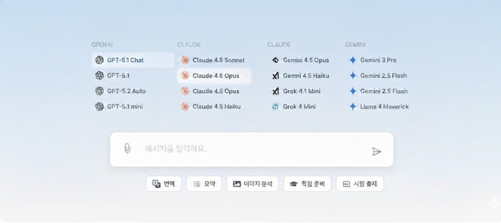

AI 플랫폼
HAI-GPT
대학 전 구성원이 최첨단 멀티 LLM 챗봇서비스를 제공하는 학습·연구 효율을 극대화하는 한림대학교 전용 생성형 AI 플랫폼입니다.
도입·구독 안내HAI Ecosystems 서비스의 데모 신청과 도입·구독은 KELI Marketplace에서 회원가입 후 이용할 수 있습니다.Marketplace 회원가입Marketplace 바로가기

대학 전 구성원이 멀티 LLM 챗봇서비스를 이용할 수 있는 한림대학교 전용 생성형 AI 플랫폼입니다.
월 교직원 20,000, 학생 5,000 크레딧 사용가능
- 제공
- 한림대학교 (HAI Ecosystems)
- 운영 상태
- 운영 중
- 대상
- 전체 구성원
- 이용 방식
- 시범 도입(무상 또는 협의) → 정식 도입(유상·기관별 협의)
- 매뉴얼
- PDF 열기
- 등록 정보
- 한림 AI 교육 포털에 등록된 정보를 자동으로 가져옵니다 (2026. 11. 3. 기준).
수업의 어느 단계에서 쓰나요.
설계부터 분석·개선까지 수업 6단계 중 이 서비스가 맡는 단계입니다.
01설계
02콘텐츠 생성
03수업·상호작용
04실습·학습
05평가
06분석·개선
통합 플랫폼·진로 서비스는 특정 수업 단계에 매이지 않습니다.
AI 융합교육과정 보기
바로 체험 · 직접 해 보기
직접 해 보기

화면 출처: 서비스 매뉴얼·소개자료(실제 화면을 본뜬 체험용이며 입력한 내용은 저장되거나 전송되지 않아요) 원본 화면 보기 ↗